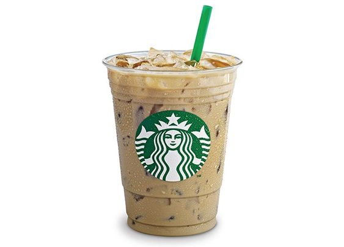
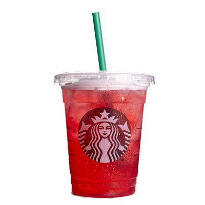

Starbucks Crie Seus
Melhores Momentos
Independente do seu gosto ou paladar, encontrará um café Starbucks®
perfeito para você.




Independente do seu gosto ou paladar, encontrará um café Starbucks®
perfeito para você.
Clique aqui para acessar o nosso Cardápio Digital*
Clique aqui para acessar uma receita imperdível do nosso Frappuccino.
© 2022 Copyright: Vinicius Xavier